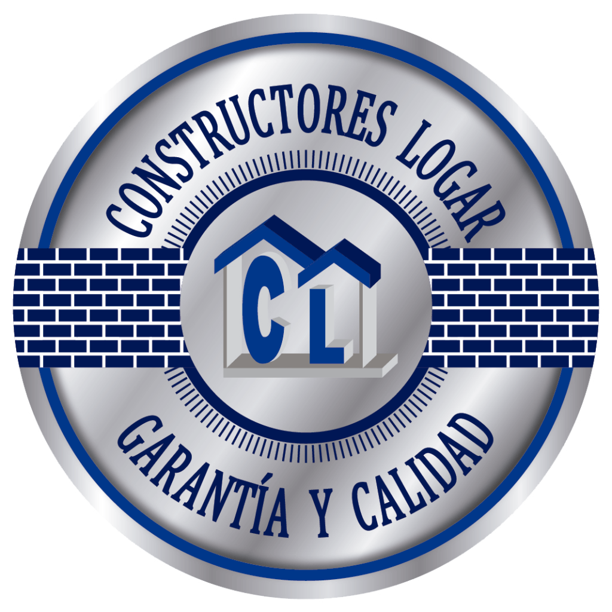

En Constructores Logar sabemos la importancia de sus proyectos, por lo
cual contamos con personal capacitado y certificado en la instalación de
materiales de gran calidad.
Los materiales usados en la obra son seleccionados cuidadosamente,
buscando la garantía y calidad que nos respaldan, cumpliendo con el
propósito de su obra.
En Constructores Logar estamos tan seguros de lo que hacemos, que le
damos garantía por los proyectos realizados: Nuestro Sello de Garantía y Calidad respalda cada obra
que usted contrate con nosotros, en cualquiera de las siguientes áreas:
Bajo las normas en seguridad, todo para ofrecer un patrimonio
digno y con mayor plusvalía, tanto a nivel Residencial, como
Comercial e Industrial.
Nuestros servicios abarcan desde la cimentación, hasta los
últimos acabados, todo supervisado por personal capacitado.

Uno de nuestros objetivos primordiales es brindar una atención
personalizada, analizando con detalle cada una de las necesidades
de nuestros clientes, para hacer de una idea toda una realidad.
Diseñamos estilos arquitectónicos estéticos y vanguardistas,
con espacios amplios y funcionales que proporcionan una
mayor comodidad
Realizamos mantenimientos efectivos en las áreas de:
Albañilería – Acabados – Impermeabilización – Carpintería
Electricidad – Herrería – Pintura
– Sistemas Hidro Sanitarios
Sistemas de Riego – Jardinería – Aluminios – Tablaroca
Nos hemos especializado en la instalación de redes de agua
potable, telefonía y cable. Esto incluye, la gestión de trámites
para la autorización del proyecto, planos, elaboración de zanjas,
construcción de las redes y supervisión.
Así mismo, hemos dado servicio de alumbrado, pintura y
mantenimiento de parques.
El cumplimiento de los reglamentos vigentes, fortalece la
confianza y asegura la tranquilidad de quienes contratan
nuestros servicios.
Tramitamos licencias de funcionamiento, permisos de
construcción, altas de las obras ante el IMSS, contratos de
servicios, créditos, etc.
Contamos con un Mini cargador marca CASE con martillo
demoledor, el cual se puede ocupar en espacios reducidos,
como para excavación de piscinas. Contamos con personal
capacitado para su operación y la maquinaria cuenta con
seguro de cobertura completa en caso de accidente y
servicio satelital GPS.
De la misma forma, ofrecemos los servicios de renta de
maquinaria pesada:
Tractor D6 – Retroexcavadora – Volquetes de 7 y 14 m3 – Perforadoras de Pozos – Pipas